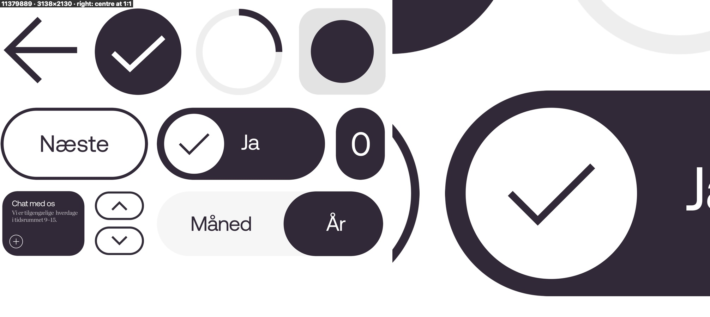
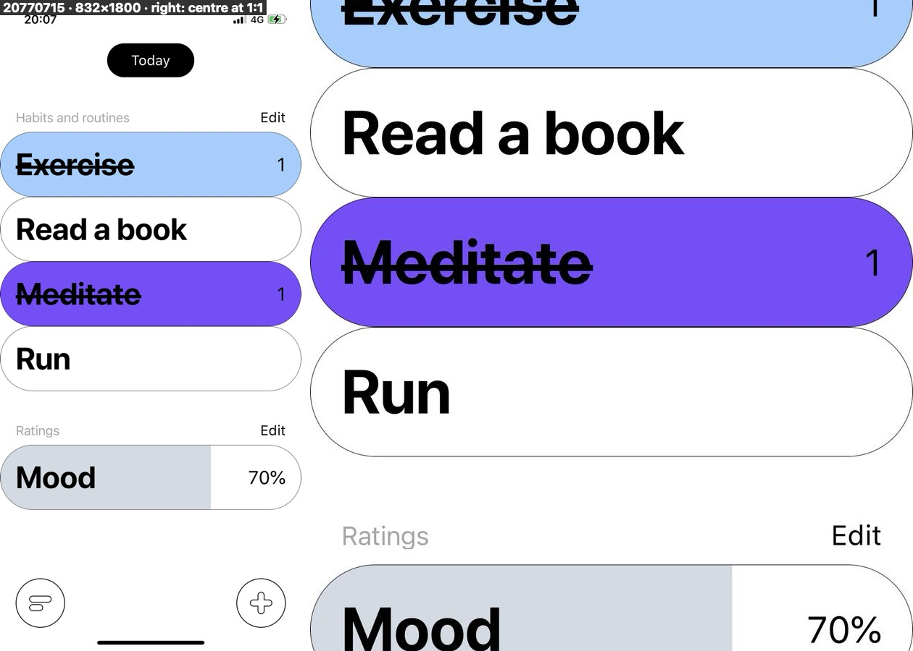
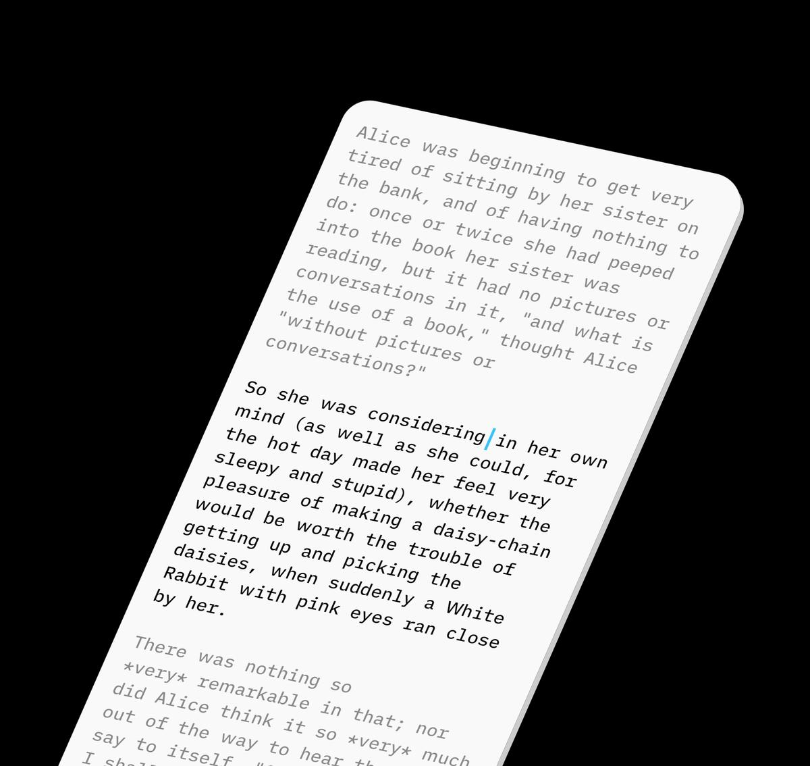

VHS menu
19335916
popup: feature toggles
replaces: iOS green switches in rounded grouped cards |  | - PASS must: each toggle's state is shown as a word (on / off), not as a switch, slider or pill control
All four toggle rows end in '[on] / off' text (posts-off screens show 'on / [off]'); no switch anywhere, where today has green iOS switches. - PASS must: the state words line up in one column on the right, like the values of a menu
The '[on] / off' words sit flush right in one column across all four rows, like the VHS menu's ON/OFF column. - PASS must: the current (hovered or focused) row is marked by one solid colour band across the whole row
Hover (row 2) and keyboard focus (row 1) show a full-width solid ink band edge to edge with reversed white text, as the VHS menu's red band does. - PASS must: the toggles read as a plain list of text rows, not rows inside a rounded card
Toggles are bare text rows on the popup background, with no card, border or dividers. - PASS must_not: a switch or pill-shaped control on any toggle row
No switch or pill on any toggle row in light, dark, hover, focus or posts-off states. - PASS must_not: system green or blue
No green or blue anywhere; the toggle rows use grey and ink only, and the old blue focus ring is gone.
|
B/W pill controls
11379889
popup: site choice (refuse / accept / leave)
replaces: iOS segmented control (grey track, white raised thumb) |  | - PASS must: refuse / accept / leave is one outlined pill with the chosen side filled: a soft grey fill at rest, full ink with reversed text on hover or focus
A single thin-outlined pill; 'refuse' has a soft grey rounded fill at rest (light and dark) and turns full ink with white text in the hover-pill screenshot. - PASS must: the unchosen sides are plain text on the background
'accept' and 'leave' are plain grey text on the popup background inside the outline, with no fill. - PASS must_not: a grey track with a white raised thumb
No grey track and no white raised thumb; the track is the page background with an outline, and the chosen fill is grey (rest) or ink (hover). - PASS must_not: system blue
No blue in the pill or anywhere in the popup.
|
Struck-through done items
20770715
popup: this-page status
replaces: dot + plain sentence ('cookies refused') |  | - PASS must: when a banner was handled, the main status line names the handled thing struck through, at full text size
'cookie banner' is the status line, struck through, in a darker, slightly heavier weight a bit larger than the body text, with 'refused · onetrust' below. - PASS must: the handled row is set apart as a filled row (a colour field), the way done items are in the reference
The handled row is a full-width flat rose field (deep rose in dark mode) behind the struck line, like the reference's filled done rows. - PASS must_not: the strike only on a small grey prefix while the line is carried by an unstruck word
The strike covers the whole main line 'cookie banner'. The unstruck 'refused · onetrust' is a smaller secondary line below it.
|
iA Writer Focus Mode
2092684
popup: attention
replaces: every row at the same weight; green, amber, red dots and filled pills all at full strength |  | - PASS must: one thing is at full contrast (this page's status); the rest of the popup is visibly quieter
Only the struck status line is in full ink on the rose field. Toggle labels, footer and pill text are mid-grey, and the captions and 'off' words are lighter still. - PASS must_not: several accents competing at full strength (coloured dots, filled pills, ink buttons)
The green dot, blue link and white-thumb pill are gone. At rest the only colour field is the rose status row. The pill fill is soft grey, and ink appears only on hover or focus.
|
Martian Mono
31399571
all: type
replaces: ui-monospace (differs per OS) |  | - PASS must: text is set in Martian Mono
Wide, squarish monospace letterforms throughout match the Martian Mono specimen. The popup loads bundled Martian Mono woff2 files. - PASS must: Martian Mono at its natural width; the layout makes room for it
The popup is about 352px wide, up from 300px. Rows like 'answer cookie banners [on] / off' fit on one line without clipping, and the text is at normal width. - PASS must_not: the typeface condensed (font-stretch below 100%) to fit today's rows
Glyphs are not narrowed, and the popup's font-stretch is 100%.
|